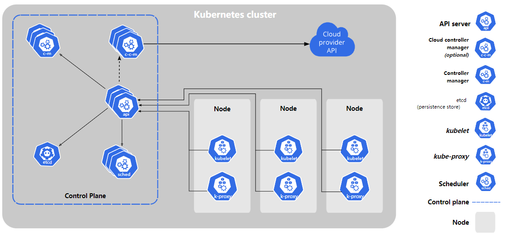

kubernetes基础总结
本文主要参考k8s官方文档总结了kubernetes的部署过程、基础概念与命令。详细部分见官方对应章节。
https://kubernetes.io/zh-cn/docs/home/
Kubernetes基础概念
Kubernetes 是一个可移植、可扩展的开源平台，用于管理容器化的工作负载和服务，可促进声明式配置和自动化。Kubernetes具有服务发现和负载均衡、存储编排、自动部署和回滚、自动调度容器、自我修复、密钥与配置管理等强大功能。
以上功能在官网中都有详细解释。
kubernetes组件概览
k8s集群是由一组被称作node的主机组成， 这些节点上会运行由 Kubernetes 所管理的容器化应用。 工作节点会托管所谓的 Pods，而 Pod 就是作为应用负载的组件。 控制平面（control plane）管理集群中的工作节点和 Pods，为集群提供故障转移和高可用性， 这些控制平面一般跨多主机运行，而集群也会跨多个节点运行。

控制平面control plane主要组件
控制平面组件会为集群做出全局决策，负责资源的调度、检测和响应集群事件，例如当不满足部署的 replicas 字段时， 要启动新的pod。
kube-apiserver
负责公开了 Kubernetes API，负责处理接受请求的工作。 API 服务器是 Kubernetes 控制平面的前端。也支持部署多实例来平衡流量。
提供认证、授权、访问控制、API注册和发现机制。
etcd
kubernetes集群存储所有数据的后台数据库。
kube-scheduler
负责监视新创建的、未指定运行节点的pod， 并选择节点来让 Pod 在上面运行。
调度决策考虑的因素包括Pod 的资源需求、软硬件及策略约束、 亲和性及反亲和性规范、数据位置、工作负载间的干扰及最后时限。
kube-controller-manager
负责运行控制器进程，包括节点（node）控制器、任务（job）控制器、端点（endpoint）控制器、服务账户和令牌（token）控制器。
可理解为集群内的管理控制中心。
节点node主要组件
kubelet
在集群中每个工作节点上运行。kubelet 接收一组通过各类机制提供给它的 PodSpecs， 确保这些 PodSpecs 描述的容器处于运行状态且健康。 kubelet 不会管理不是由 Kubernetes 创建的容器。
容器创建和健康性检查及状态汇报组件。
kube-proxy
集群中每个节点上运行的网络代理，维护节点上的网络规则， 允许从集群内部或外部的网络会话与 Pod 进行网络通信。
维护网络规则进行转发确保k8s服务可访问，还可为service提供服务发现和负载均衡。
容器运行时（Container Runtime）
容器运行环境是负责运行容器的软件。k8s支持多种容器运行环境，最常见的是containerd。containerd也是被docker使用的容器运行时。
Kubernetes部署（kubeadm）
主机环境准备
一台或多台运行兼容 deb/rpm 的 Linux 操作系统的计算机；例如：Ubuntu 或 CentOS。每台机器 2 GB 以上的内存，内存不足时应用会受限制。用作控制平面节点的计算机上至少有 2 个 CPU。
所有主机安装容器运行时和kubeadm。
1 | |
所有主机最好禁用swap（旧版本不支持，新版本需要额外设置），关闭selinux，iptables（防止规则冲突）。进行以下内核参数设置，如果容器较多，必须进行其他内核优化，如最大打开文件数等。
1 | |
所有节点必需组件
控制平面节点：kubelet kubeadm kubectl
工作节点： kubelet kubeadm （不需要kubectl命令）
版本最好一致，安装可采用国内源
Debian / Ubuntu
1 | |
CentOS / RHEL / Fedora
1 | |
准备镜像
提前在控制节点下载镜像节约安装过程，使用国内镜像源，可写成脚本批量安装。
1 | |
kubeadm init集群初始化
详细可看以下官方文档
https://kubernetes.io/zh-cn/docs/reference/setup-tools/kubeadm/kubeadm-init/#config-file
主要参数
–apiserver-advertise-address string
API 服务器所公布的其正在监听的 IP 地址。如果未设置，则使用默认网络接口。
–apiserver-bind-port int32 默认值：6443
API 服务器绑定的端口。
–cert-dir string 默认值：”/etc/kubernetes/pki”
保存和存储证书的路径。
–certificate-key string
用于加密 kubeadm-certs Secret 中的控制平面证书的密钥。
–config string
kubeadm 配置文件的路径。
–control-plane-endpoint string
为控制平面指定一个稳定的 IP 地址或 DNS 名称。
–dry-run
不要应用任何更改；只是输出将要执行的操作。
–ignore-preflight-errors strings
错误将显示为警告的检查列表；例如：’IsPrivilegedUser,Swap’。取值为 ‘all’ 时将忽略检查中的所有错误。
–image-repository string 默认值：”k8s.gcr.io”
选择用于拉取控制平面镜像的容器仓库
–kubernetes-version string 默认值：”stable-1”
为控制平面选择一个特定的 Kubernetes 版本。
–node-name string
指定节点的名称。
–pod-network-cidr string
指明 pod 网络可以使用的 IP 地址段。如果设置了这个参数，控制平面将会为每一个节点自动分配 CIDRs。
–service-cidr string 默认值：”10.96.0.0/12”
为服务的虚拟 IP 地址另外指定 IP 地址段
–service-dns-domain string 默认值：”cluster.local”
为服务另外指定域名，例如：”myorg.internal”。
参考示例
1 | |
完成初始化后有以下提示：要使非 root 用户可以运行 kubectl，请运行以下命令， 它们也是 kubeadm init 输出的一部分：
1 | |
添加节点
安装 Pod 网络附加组件
注意 Pod 网络不得与任何主机网络冲突。网络组件可使用kube-flannel
1 | |
Flannel实质上是一种“覆盖网络(overlay network)”，也就是将TCP数据包装在另一种网络包里面进行路由转发和通信。
Flannel通过Etcd服务维护了一张节点间的路由表，详细记录了各节点子网网段 。源主机的flanneld服务将原本的数据内容封装后根据自己的路由表投递给目的节点的flanneld服务，数据到达以后被解包，然后直接进入目的节点的flannel0虚拟网卡，然后被转发到目的主机的docker0虚拟网卡，最后就像本机容器通信一下的有docker0路由到达目标容器。
生成证书
任一控制节点执行
1 | |
其他节点加入集群
hash和token是执行完init后打印到屏幕上的，需要记录以供该步使用
1 | |
删除节点
使用适当的凭证与控制平面节点通信，运行：
1 | |
在删除节点之前，请重置 kubeadm 安装的状态：
1 | |
重置过程不会重置或清除 iptables 规则或 IPVS 表。如果你希望重置 iptables，则必须手动进行：
1 | |
如果要重置 IPVS 表，则必须运行以下命令：
1 | |
现在删除节点：
1 | |
Kubernetes部分主要对象
API对象是k8s的管理操作单元。每个API对象都有3大类属性：元数据metadata、规范spec和状态status。其中metadata是用来标识API对象的，status描述了系统实际当前达到的状态。
K8s中所有的配置都是通过API对象的spec去设置的，也就是用户通过配置系统的理想状态来改变系统，这是k8s重要设计理念之一，即所有的操作都是声明式的而不是命令式的。
资源对象
Pod
K8s集群中运行部署应用或服务的最小单元，它是可以支持多容器的。Pod的设计理念是支持多个容器在一个Pod中共享网络地址和文件系统，可以通过进程间通信和文件共享这种简单高效的方式组合完成微服务。
ReplicaSet、ReplicationController、Deployment
副本控制器，由RC发展为RS，到Deployment调用RS。Deployment表示用户对K8s集群的一次更新操作。Deployment是一个比RS应用模式更广的API对象，可以是创建一个新的服务，更新一个新的服务，也可以是滚动升级一个服务。
Service
一个Pod只是一个运行服务的实例，随时可能在一个节点上停止，在另一个节点以一个新的IP启动一个新的Pod，因此不能以确定的IP和端口号提供服务。要稳定地提供服务需要服务发现和负载均衡能力。服务发现完成的工作，是针对客户端访问的服务，找到对应的的后端服务实例。在K8s集群中，客户端需要访问的服务就是Service对象。每个Service会对应一个集群内部有效的虚拟IP，集群内部通过虚拟IP访问一个服务。在K8s集群中微服务的负载均衡是由Kube-proxy实现的。
其它
Node、Namespace、Ingress、Labbel、Job等
存储对象
Volume
实现数据和镜像解耦，与docker -v挂载目录类似，可多容器挂载同一目录实现数据共享。有与容器共同创建销毁的emptyDir、只持久保存在一个node上的hostPath、共享卷nfs
ConfigMap
实现配置信息和镜像解耦，可在yaml中编写configmap对象，然后调用。
策略对象
Securitycontext、ResourceQuota、LimitRange
身份对象
ServiceAccount、Role、ClusterRole
kubectl命令
语法 kubectl [command] [TYPE] [NAME] [flags]
其中 command、TYPE、NAME 和 flags 分别是：
command：指定要对一个或多个资源执行的操作，例如create、get、describe、delete。TYPE：指定资源类型。资源类型不区分大小写， 可以指定单数、复数或缩写形式。NAME：指定资源的名称。名称区分大小写。 如果省略名称，则显示所有资源的详细信息。例如：kubectl get pods。在对多个资源执行操作时，你可以按类型和名称指定每个资源，或指定一个或多个文件。flags： 指定可选的参数。例如，可以使用-s或--server参数指定 Kubernetes API 服务器的地址和端口。
常用command
创建、删除、查看信息、缩放create/delete/get/describe/scale
贴实现pod与node亲和性 label 反亲和性taint 标记node不被调度 condon 驱逐node上的pod drain
以文件或标准输入为准应用或更新资源 apply
以下为示例
1 | |
本博客所有文章除特别声明外，均采用 CC BY-SA 4.0 协议 ，转载请注明出处！